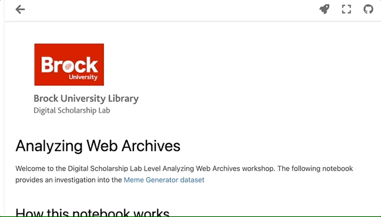

Analyzing Web Archives
Contents

Analyzing Web Archives¶
Welcome to the Digital Scholarship Lab Level Analyzing Web Archives workshop. The following notebook provides an investigation into the Meme Generator dataset
How this notebook works¶
This webpage is a Google Colab notebook and is comprised of different cells. Some are code cells that run Python snippets. To works through these cells simply click on the triangle run button in each cell. Click in the cell below to see the play button, then click on it.

!pip install langdetect
import pandas as pd
import matplotlib.pyplot as plt
#from IPython.core.display import display,HTML
from IPython.display import Image,display
from langdetect import detect
import matplotlib.pyplot as plt
%matplotlib inline
print("Libraries loaded, and ready to run!")
Requirement already satisfied: langdetect in /Users/calmurgu/opt/anaconda3/lib/python3.9/site-packages (1.0.9)
Requirement already satisfied: six in /Users/calmurgu/opt/anaconda3/lib/python3.9/site-packages (from langdetect) (1.16.0)
Libraries loaded, and ready to run!
Loading our data set¶
The information from this archive is saved in a CSV file. Or put in otherwords, something like a spreadsheet. In the next cell we will load this file into something call a dataframe and we’ll look at the first 5 entries by looking at the head.
meme_data = pd.read_csv("https://raw.githubusercontent.com/BrockDSL/Analyzing_Web_Archives/main/memegenerator.csv", sep=",")
meme_data.head(5)
| Meme ID | Archived URL | Base Meme Name | Meme Page URL | MD5 Hash | File Size (In Bytes) | Alternate Text | Display Name | Upper Text | Lower Text | |
|---|---|---|---|---|---|---|---|---|---|---|
| 0 | 10509464 | http://webarchive.loc.gov/all/0/http://cdn.mem... | Spiderman Approves | http://memegenerator.net/instance/10509464 | 91eee1453f2b66b4b0d662476bf630d8 | 87868 | seems legit | Spiderman Approves | seems | legit |
| 1 | 12285257 | http://webarchive.loc.gov/all/0/http://cdn.mem... | Alright Then Business Kid | http://memegenerator.net/instance/12285257 | 96a3aa60c0f3a5ffb027e8977f23b2cc | 110242 | Fret not I stayed at a Holiday Inn Express las... | Alright Then Business Kid | Fret not | I stayed at a Holiday Inn Express last night |
| 2 | 20612245 | http://webarchive.loc.gov/all/0/https://cdn.me... | Archer | http://memegenerator.net/instance/20612245 | 1b84704851704a2dc366768a2210d659 | 125963 | hello airplanes? yeah, this is blimps. Yeah, y... | Archer | hello airplanes? yeah, this is blimps. | Yeah, you win. |
| 3 | 20614628 | http://webarchive.loc.gov/all/0/http://cdn.mem... | Futurama Fry | http://memegenerator.net/instance/20614628 | 448f5d4a15f5c90ce4d64c75013c8e9a | 161623 | LEGS IN COVER. TOO HOT. LEGS OUT OF COVER. TOO... | Futurama Fry | LEGS IN COVER. TOO HOT. LEGS OUT OF COVER. TOO... | BUt Scared monster under the bed will eat me |
| 4 | 24194267 | http://webarchive.loc.gov/all/0/https://cdn.me... | One Does Not Simply | http://memegenerator.net/instance/24194267 | 37feb180a0e7660e360ed94380b39f60 | 92866 | one does not simply put toothpaste back in th... | One Does Not Simply | one does not simply | put toothpaste back in the tube |
Some General Data Exploration¶
How much data?¶
We can count the length of our data frame to see how many entries we have using thing len() function.
print("We have this many memes to look at: ",len(meme_data))
We have this many memes to look at: 57687
Random Entry¶
To get a better sense of what is in our dataset let’s look at a random entry by using sample with a value of 1. Click the below button a few times to get a few different options.
rando = meme_data.sample(1)
display(Image(url=rando['Archived URL'].values[0], format='jpg'))
print("View on Memegenerator: \t",rando['Meme Page URL'].values[0])
print("View on Archive: \t\t\t",rando['Archived URL'].values[0])
rando

View on Memegenerator: http://memegenerator.net/instance/20093433
View on Archive: http://webarchive.loc.gov/all/0/https://cdn.meme.am/instances/250x250/20093433.jpg
| Meme ID | Archived URL | Base Meme Name | Meme Page URL | MD5 Hash | File Size (In Bytes) | Alternate Text | Display Name | Upper Text | Lower Text | |
|---|---|---|---|---|---|---|---|---|---|---|
| 29846 | 20093433 | http://webarchive.loc.gov/all/0/https://cdn.me... | Angry Arnold | http://memegenerator.net/instance/20093433 | 636971352ca3df70f5d2d3b3d20128f9 | 43880 | Hoy me le copio a la marcela en el examen | Angry Arnold | Hoy me le copio | a la marcela en el examen |
Q1 Have a look at the data that is associated with a random record. In the chat box suggest some things you might want to explore with this data? Share your reponse in the chat box.
Category of memes?¶
As you might know, memes come in many different flavours. Let’s see if we can find out how many types there are? We’ll do this by grouping our Base Meme Name column and counting how many entries are in each.
meme_data.groupby(["Base Meme Name"]).count()
| Meme ID | Archived URL | Meme Page URL | MD5 Hash | File Size (In Bytes) | Alternate Text | Display Name | Upper Text | Lower Text | |
|---|---|---|---|---|---|---|---|---|---|
| Base Meme Name | |||||||||
| - | 70 | 70 | 70 | 70 | 70 | 70 | 70 | 70 | 70 |
| 10guy | 1 | 1 | 1 | 1 | 1 | 1 | 1 | 1 | 1 |
| 12 oz mouse | 9 | 9 | 9 | 9 | 9 | 9 | 9 | 9 | 9 |
| 158 | 66 | 66 | 66 | 66 | 66 | 66 | 66 | 66 | 66 |
| 1889 [10] guy | 52 | 52 | 52 | 52 | 52 | 52 | 52 | 52 | 52 |
| ... | ... | ... | ... | ... | ... | ... | ... | ... | ... |
| ТИПИЧНАЯ DIVA | 45 | 45 | 45 | 45 | 45 | 45 | 45 | 45 | 45 |
| ТИПИЧНЫЙ JONGHYUN | 1 | 1 | 1 | 1 | 1 | 1 | 1 | 1 | 1 |
| ТИПИЧНЫЙ ONEW | 1 | 1 | 1 | 1 | 1 | 1 | 1 | 1 | 1 |
| ТИПИЧНЫЙ TAEMIN | 1 | 1 | 1 | 1 | 1 | 1 | 1 | 1 | 1 |
| Типичная Эля Чавес/Typical Elya Chavez | 1 | 1 | 1 | 1 | 1 | 1 | 1 | 1 | 1 |
1651 rows × 9 columns
Q2 Based on the above summary how many different type so memes we have? Share your response in the chat box.
Yikes! That looks like a lot. Let’s just keep the top 25 entries. We’ll do this by sorting.
meme_data.groupby(["Base Meme Name"]).count().sort_values(by="Meme ID",ascending=False)[0:25]
| Meme ID | Archived URL | Meme Page URL | MD5 Hash | File Size (In Bytes) | Alternate Text | Display Name | Upper Text | Lower Text | |
|---|---|---|---|---|---|---|---|---|---|
| Base Meme Name | |||||||||
| Y U No | 766 | 766 | 766 | 766 | 766 | 766 | 766 | 766 | 766 |
| Futurama Fry | 663 | 663 | 663 | 663 | 663 | 663 | 663 | 663 | 663 |
| Insanity Wolf | 612 | 612 | 612 | 612 | 612 | 612 | 612 | 612 | 612 |
| Philosoraptor | 531 | 531 | 531 | 531 | 531 | 531 | 531 | 531 | 531 |
| The Most Interesting Man In The World | 511 | 511 | 511 | 511 | 511 | 511 | 511 | 511 | 511 |
| Success Kid | 510 | 510 | 510 | 510 | 510 | 510 | 510 | 510 | 510 |
| Foul Bachelor Frog | 469 | 469 | 469 | 469 | 469 | 469 | 469 | 469 | 468 |
| Socially Awkward Penguin | 446 | 446 | 446 | 446 | 446 | 446 | 446 | 446 | 446 |
| Advice Yoda Gives | 420 | 420 | 420 | 420 | 420 | 420 | 420 | 420 | 420 |
| Joseph Ducreux | 415 | 415 | 415 | 415 | 415 | 415 | 415 | 415 | 415 |
| Forever Alone | 414 | 414 | 414 | 414 | 414 | 414 | 414 | 414 | 414 |
| Slowpoke | 400 | 400 | 400 | 400 | 400 | 400 | 400 | 400 | 400 |
| Good Guy Greg | 387 | 387 | 387 | 387 | 387 | 387 | 387 | 387 | 387 |
| we got a badass over here | 381 | 381 | 381 | 381 | 381 | 381 | 381 | 381 | 380 |
| Courage Wolf | 375 | 375 | 375 | 375 | 375 | 375 | 375 | 375 | 375 |
| Butthurt Dweller | 365 | 365 | 365 | 365 | 365 | 365 | 365 | 365 | 365 |
| Yo Dawg | 363 | 363 | 363 | 363 | 363 | 363 | 363 | 362 | 362 |
| Willy Wonka | 356 | 356 | 356 | 356 | 356 | 356 | 356 | 356 | 356 |
| success baby | 345 | 345 | 345 | 345 | 345 | 345 | 345 | 344 | 342 |
| Chuck Norris | 344 | 344 | 344 | 344 | 344 | 344 | 344 | 344 | 344 |
| Conspiracy Keanu | 340 | 340 | 340 | 340 | 340 | 340 | 340 | 340 | 340 |
| Annoying Gamer Kid | 332 | 332 | 332 | 332 | 332 | 332 | 332 | 332 | 332 |
| Trollface | 308 | 308 | 308 | 308 | 308 | 308 | 308 | 308 | 308 |
| Me Gusta | 299 | 299 | 299 | 299 | 299 | 297 | 299 | 298 | 294 |
| All the things | 297 | 297 | 297 | 297 | 297 | 297 | 297 | 297 | 296 |
#@title Random Meme by Category
#@markdown Type copy and pasting one of the **Base Meme Name** to see a random entry from that category of meme
meme_option = "Slowpoke" #@param {type:"string"}
rando = meme_data[meme_data["Base Meme Name"] == str(meme_option)].sample(1)
display(Image(url=rando['Archived URL'].values[0], format='jpg'))
print("View on Memegenerator: \t",rando['Meme Page URL'].values[0])
print("View on Archive: \t\t\t",rando['Archived URL'].values[0])
rando

View on Memegenerator: http://memegenerator.net/instance/25498709
View on Archive: http://webarchive.loc.gov/all/0/http://cdn.meme.am/instances/250x250/25498709.jpg
| Meme ID | Archived URL | Base Meme Name | Meme Page URL | MD5 Hash | File Size (In Bytes) | Alternate Text | Display Name | Upper Text | Lower Text | |
|---|---|---|---|---|---|---|---|---|---|---|
| 41738 | 25498709 | http://webarchive.loc.gov/all/0/http://cdn.mem... | Slowpoke | http://memegenerator.net/instance/25498709 | 03f4bd293ee277eb2ef432212115ab6e | 40542 | да ты чтоооо | Slowpoke | да ты чтоооо | - |
What’s the average number of memes in each type?
meme_type_average = meme_data.groupby(["Base Meme Name"])["Meme ID"].count().mean()
print("Average number of entries per meme category: ",meme_type_average)
Average number of entries per meme category: 34.940642035130224
Let’s draw a histogram of this distribution
bins = 150
plt.hist(meme_data.groupby(["Base Meme Name"]).count().sort_values(by="Meme ID",ascending=False)["Meme ID"],bins)
plt.title("Category Frequency")
plt.xlabel("Number of Entries")
plt.ylabel("Number of Categories")
plt.show()
Q3 Can you describe this graph? What is the biggest value that it is showing?
data things to do
alt text somehow?
language detection?
pull in scores via API?
Language info¶
As we’ve seen in our examples there are many different languages represented in our dataset. Let’s see if we can enrich our dataset by automatically detecting what language it is and adding that as a new column. We’ll us the langdetect library to do this.
#Let's look at our random item again
rando
| Meme ID | Archived URL | Base Meme Name | Meme Page URL | MD5 Hash | File Size (In Bytes) | Alternate Text | Display Name | Upper Text | Lower Text | |
|---|---|---|---|---|---|---|---|---|---|---|
| 41738 | 25498709 | http://webarchive.loc.gov/all/0/http://cdn.mem... | Slowpoke | http://memegenerator.net/instance/25498709 | 03f4bd293ee277eb2ef432212115ab6e | 40542 | да ты чтоооо | Slowpoke | да ты чтоооо | - |
# Let's the language of the random entry from earlier
# We'll get a two letter languge code that represents one of the languages in the list of ISO 639-1 codes (https://en.wikipedia.org/wiki/List_of_ISO_639-1_codes).
detect(str(rando["Alternate Text"]))
'ro'
It would take to long to calculate all these values now for all of the entries in the dataset. So the next cell will just add a new column to our dataset of pre-calculated values.
(It took 8 minutes for the code to run)
#open CSV to dataframe
lang_data = pd.read_csv("https://raw.githubusercontent.com/BrockDSL/Analyzing_Web_Archives/main/language_data.csv")
#append to meme_data dataframe
meme_data = meme_data.join(lang_data)
meme_data.sample(5)
| Meme ID | Archived URL | Base Meme Name | Meme Page URL | MD5 Hash | File Size (In Bytes) | Alternate Text | Display Name | Upper Text | Lower Text | Language | |
|---|---|---|---|---|---|---|---|---|---|---|---|
| 48567 | 29519242 | http://webarchive.loc.gov/all/0/http://cdn.mem... | Uncle Sam Says | http://memegenerator.net/instance/29519242 | c469fd07fe0519115a1eac4951e2238f | 60586 | Почему не штабишь Антон палыч? | Uncle Sam Says | Почему не штабишь | Антон палыч? | ru |
| 26674 | 18035363 | http://webarchive.loc.gov/all/0/https://cdn.me... | yaowonkaxd | http://memegenerator.net/instance/18035363 | 3baf076728e9b4406af083d94c7d1b33 | 64225 | que se siente escuchar la cancion hangover y c... | yaowonkaxd | que se siente escuchar la cancion hangover | y cambiarle hangover por range rover | es |
| 39863 | 24568200 | http://webarchive.loc.gov/all/0/https://cdn.me... | KLINIK TONGFANG | http://memegenerator.net/instance/24568200 | 0cb49b8cee9452a9a7857763ec8ac348 | 61590 | DULU SAYA SELALU TELAH DALAM DEADLINE BIKIN KO... | KLINIK TONGFANG | DULU SAYA SELALU TELAH DALAM DEADLINE BIKIN KOMIK | TAPI SETELAH SAYA KE KLINIK TONG FANG, SAYA KE... | de |
| 22946 | 15852175 | http://webarchive.loc.gov/all/0/https://cdn.me... | Typical Gorillaz | http://memegenerator.net/instance/15852175 | 3581746303dceb09923f503bface4b18 | 56286 | Fan А Мердок поздравил 2D с 8 марта:3 | Typical Gorillaz-Fan | А Мердок поздравил 2D | с 8 марта:3 | ru |
| 32711 | 21621586 | http://webarchive.loc.gov/all/0/http://cdn.mem... | Stoner Dog | http://memegenerator.net/instance/21621586 | 922e05e6f5e2d7a399434f1ab1e724e8 | 67677 | jujuju esa que me eche esta va vencida pero ma... | Stoner Dog | jujuju esa que me eche esta va vencida pero ma... | veo mi dueño asiendo caca | es |
language_count = dict()
# Go through each row of the data and see what two letter language code
# is in the iso_language_code metadata field
for row in meme_data.itertuples(index=False):
language_entry = row[-1]
#Create a lookup 'dictionary' of codes
if language_entry in language_count:
language_count[language_entry] += 1
else:
language_count[language_entry] = 1
plt.pie(list(language_count.values()),labels=list(language_count.keys()))
plt.title("Languages in the Memes")
plt.show()